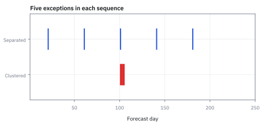
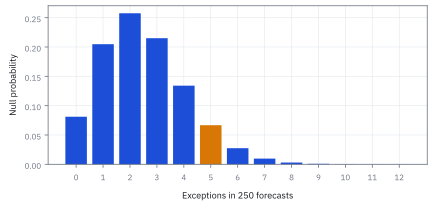
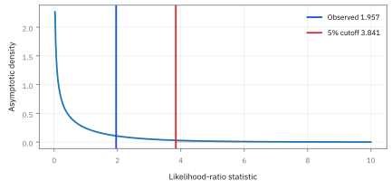
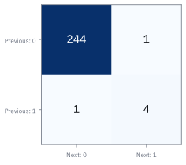
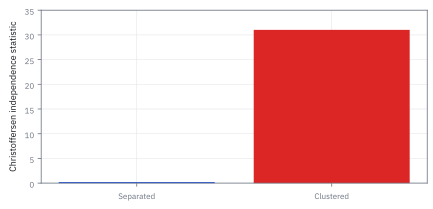

17.7 VaR Backtesting: Kupiec and Christoffersen
นับวันที่ขาดทุนเกิน VaR แล้วถามสองคำถาม: มากเกินที่ความบังเอิญอธิบายได้ไหม และมาติดกันเกินไปไหม ทั้งสองคำถามตอบด้วย likelihood ratio และทั้งสองมีพลังต่ำกว่าที่คนส่วนใหญ่คิด
สองแบบจำลอง VaR 99% ถูกตรวจย้อนหลัง 250 วันทำการ ทั้งคู่มีวันที่ขาดทุนเกิน VaR (breach) 5 วันเท่ากัน แบบแรกเกิดกระจายกันทั้งปี แบบที่สองเกิดห้าวันติด ผู้ตรวจคนหนึ่งบอกว่า “จำนวนเท่ากัน คุณภาพก็เท่ากัน” ถูกไหม?
ลองตอบก่อนเปิดเฉลย
ผิด การนับของ Kupiec ให้สถิติ 1.957 เท่ากันทั้งคู่ (p-value 0.162 ยังไม่ปฏิเสธ) แต่การตรวจการเกาะกลุ่มของ Christoffersen ให้ 0.204 กับชุดกระจาย และ 31.02 กับชุดติดกัน หลังวันที่พลาด ชุดที่สองพลาดซ้ำ 80% ของครั้ง แบบจำลองที่สองถูกปฏิเสธ (สถิติร่วม 32.97, p-value $6.9\times10^{-8}$) เพราะมันไม่ตามความผันผวนที่เปลี่ยน
สิ่งที่เราจะสร้าง
17.1 สร้าง VaR ส่วน 16.4 ทำให้ VaR ขยับตามความผันผวนรายวัน หน้านี้ตรวจว่าตัวเลขที่ประกาศไว้ล่วงหน้าคุมได้จริงตามที่อ้างไหม ตัวเลข 250 มาจากกรอบ backtesting ของ Basel ปี 1996 ที่ให้ตรวจ 250 วันทำการล่าสุด ซึ่งราวหนึ่งปี (1.1 นับปีได้ 252 วันทำการ)
เริ่มจากแปลงขาดทุนเป็นวันพลาดหรือไม่พลาด ใช้ Binomial ของ 1.5 หาว่าจำนวนพลาดแกว่งได้แค่ไหน สร้างสถิติ Kupiec จาก likelihood เทียบกับค่าแม่นตรงของ Binomial ดูกติกาไฟสามสีของ Basel นับการเปลี่ยนสถานะแล้วสร้างสถิติ Christoffersen และจบที่คำถามว่าการทดสอบจับแบบจำลองที่แย่ได้บ่อยแค่ไหน
ศัพท์ที่ใช้ในหัวข้อนี้
- Backtesting
- การเทียบ VaR ที่ประกาศไว้ก่อนแต่ละวันกับขาดทุนที่เกิดจริง ใช้ตรวจว่าแบบจำลองความเสี่ยงยังใช้ได้ ผู้กำกับดูแลบังคับให้ธนาคารทำ
- Breach (exception)
- วันที่ขาดทุนจริงมากกว่า VaR ที่ประกาศ เอกสารกำกับดูแลเรียก exception ตำราเรียก breach ของสิ่งเดียวกัน แบบจำลอง 99% ต้องมีวันแบบนี้ราว 2 ถึง 3 วันต่อปี
- Likelihood ratio (LR)
- สองเท่าของผลต่าง log-likelihood ระหว่างแบบจำลองที่ยืดหยุ่นกว่ากับแบบที่ตรึงค่าไว้ ใช้ถามว่าความยืดหยุ่นที่เพิ่มอธิบายข้อมูลดีขึ้นเกินความบังเอิญไหม
- Kupiec (proportion of failures)
- การทดสอบว่าสัดส่วนวันพลาดตรงกับที่แบบจำลองสัญญา เช่น 1% หรือไม่ ดูแค่จำนวน ไม่ดูลำดับ
- Christoffersen (independence)
- การทดสอบว่าโอกาสพลาดวันนี้ขึ้นกับว่าเมื่อวานพลาดไหม ใช้จับแบบจำลองที่ตามความผันผวนไม่ทัน ซึ่งพลาดเป็นก้อน
- p-value
- โอกาสที่จะเห็นสถิติสุดโต่งอย่างน้อยเท่าที่เห็น ถ้าแบบจำลองถูก (3.5) เล็กกว่าระดับที่ตั้งไว้ เช่น 5% จึงปฏิเสธ
- Traffic light (ไฟสามสีของ Basel)
- กติกาที่แบ่งจำนวนวันพลาดใน 250 วันเป็นเขียว เหลือง แดง แล้วเพิ่มตัวคูณเงินกองทุนตามโซน
สัญลักษณ์และหน่วย
| สัญลักษณ์ | ความหมาย | หน่วย |
|---|---|---|
| $L_t$ | ขาดทุนจริงของวันที่ $t$ นับเป็นบวกเมื่อเสีย | \$ |
| $v_t$ | VaR ที่ประกาศไว้ก่อนวันที่ $t$ เริ่ม | \$ |
| $I_t$ | 1 ถ้า $L_t\gt v_t$ ไม่อย่างนั้น 0 | 0 หรือ 1 |
| $T$ | จำนวนวันที่ตรวจ | วัน |
| $x$ | จำนวนวันพลาด | วัน |
| $p$ | สัดส่วนพลาดที่แบบจำลองสัญญา (0.01 สำหรับ VaR 99%) | สัดส่วน |
| $\hat p$ | สัดส่วนพลาดจริง $x/T$ | สัดส่วน |
| $n_{ij}$ | จำนวนคู่ (เมื่อวานสถานะ $i$, วันนี้สถานะ $j$) | คู่ |
| $\hat\pi_0,\ \hat\pi_1$ | สัดส่วนพลาดหลังวันไม่พลาด และหลังวันพลาด | สัดส่วน |
| $\hat\pi$ | สัดส่วนพลาดรวม | สัดส่วน |
| $\ell_1,\ \ell_0$ | log-likelihood ของแบบที่ขึ้นกับเมื่อวาน และแบบที่ไม่ขึ้น | ไม่มีหน่วย |
| $\mathrm{LR}_{\mathrm{uc}},\ \mathrm{LR}_{\mathrm{ind}},\ \mathrm{LR}_{\mathrm{cc}}$ | สถิติของจำนวน ของการเกาะกลุ่ม และผลรวมของสองตัว | ไม่มีหน่วย |
ขั้นที่ 1 — จากขาดทุนเป็นเลข 0 กับ 1 แล้วถามว่าห้าวันเยอะไหม
ก่อนทดสอบอะไร ต้องแปลงขาดทุนรายวันเป็นพลาดหรือไม่พลาด VaR ต้องประกาศก่อนวันนั้นเริ่ม ห้ามแก้ย้อนหลังหลังเห็นผล ถ้าแบบจำลองถูกและวันต่าง ๆ อิสระกัน จำนวนวันพลาดคือจำนวนครั้งที่ “ออกหัว” ของเหรียญที่ออกหัว 1% ทอย 250 ครั้ง นั่นคือ Binomial (1.5)
2.5 เป็นค่าเฉลี่ย ไม่ใช่จำนวนที่ต้องเกิด แบบจำลองที่ถูกทุกประการยังมีโอกาส 8.1% ที่จะไม่พลาดเลยทั้งปี และ 10.78% ที่จะพลาด 5 วันขึ้นไป ห้าวันจึงสูงกว่าที่คาดสองเท่า แต่ยังเกิดกับแบบจำลองที่ถูกได้ราวหนึ่งปีในเก้าปี
Figure 17.7a — จำนวนพลาดเท่ากันแต่รูปแบบต่างกัน

แกนนอนคือวันพยากรณ์ 1 ถึง 250 แถวบน (Separated) พลาดวันที่ 21, 61, 101, 141 และ 181 แถวล่าง (Clustered) พลาดวันที่ 101 ถึง 105 ติดกัน การนับรวมเห็นห้าเท่ากัน ต้องดูลำดับจึงเห็นความต่าง
Figure 17.7b — ห้าครั้งไม่ได้เป็นผลลัพธ์เดียวที่เป็นไปได้

แกนนอนคือจำนวนวันพลาด 0 ถึง 12 แกนตั้งคือโอกาสภายใต้ Binomial(250, 0.01) ยอดอยู่ที่ 2 (0.257) แท่งส้มคือ 5 วัน (0.067) แท่งทางขวาของมันรวมกันได้ 10.78% ตามขั้นที่ 1
ขั้นที่ 2 — สถิติ Kupiec: likelihood ของสองคำอธิบาย
คำอธิบายแรกบอกว่าโอกาสพลาดคือ $p=0.01$ ตามที่แบบจำลองสัญญา คำอธิบายที่สองปล่อยให้ข้อมูลเลือกโอกาสเอง ซึ่งค่าที่ดีที่สุดคือ $\hat p=x/T$ ถามว่าคำอธิบายแรกแย่กว่าแค่ไหน ตัวเลข $\binom{T}{x}$ เหมือนกันจึงตัดกัน
$L(\hat p)$ ไม่มีวันน้อยกว่า $L(p)$ เพราะ $\hat p$ คือค่าที่ทำให้ likelihood สูงสุด อัตราส่วนจึงไม่เกิน 1 และ LR ไม่ติดลบ ถ้า $\hat p=p$ พอดี LR เป็นศูนย์ ยิ่ง $\hat p$ ห่างจาก $p$ ทางไหนก็ตาม LR ยิ่งโต
ทฤษฎีบทของ Wilks บอกว่าเมื่อข้อมูลมาก และแบบจำลองที่ตรึงค่าถูก LR มี distribution ใกล้ chi-square หนึ่ง degree of freedom (มีค่าที่ถูกตรึงหนึ่งตัว) นี่คือการประมาณ ขั้นที่ 3 จะเห็นว่าที่จำนวนพลาดน้อยขนาดนี้ มันคลาดจากค่าแม่นตรงพอสมควร
ขั้นที่ 3 — ห้าวันใน 250 วัน: chi-square เทียบค่าแม่นตรง
แทน $T=250$ $x=5$ $p=0.01$ แล้วหา p-value สองทาง: จาก chi-square หนึ่ง degree of freedom ซึ่งเท่ากับโอกาสที่ Normal มาตรฐานห่างศูนย์เกิน $\sqrt{\mathrm{LR}}$ และจาก Binomial ของขั้นที่ 1 ตรง ๆ
ก้อนแรกเป็นบวกเพราะพลาดบ่อยกว่าที่สัญญาสองเท่า ก้อนที่สองเป็นลบเพราะวันที่ไม่พลาดน้อยกว่าที่ควร สองก้อนหักกันเหลือ 1.957 ต่ำกว่าจุดตัด 3.841 ของ chi-square ที่ 5% จึงยังไม่ปฏิเสธ ห้าวันยังอยู่ในวิสัยของความบังเอิญ
p-value จาก chi-square คือ 0.162 แต่โอกาสแม่นตรงที่จะพลาด 5 วันขึ้นไปคือ 0.108 ต่างกันราวครึ่งหนึ่ง เพราะจำนวนพลาดที่คาดมีแค่ 2.5 ห่างจาก “ข้อมูลมาก” ที่ Wilks ต้องการ ข้อสรุปไม่เปลี่ยน แต่เมื่อจำนวนน้อย ควรดูค่าแม่นตรงของ Binomial ด้วย
Figure 17.7c — สถิติ Kupiec ยังต่ำกว่าจุดตัด

แกนนอนคือค่าสถิติ LR 0.03 ถึง 10 เส้นโค้งคือ density ของ chi-square หนึ่ง degree of freedom ซึ่งเป็นการประมาณ ไม่ใช่ distribution แม่นตรงของ 250 วัน เส้นน้ำเงินคือค่าที่เห็น 1.957 เส้นแดงคือจุดตัด 5% ที่ 3.841 พื้นที่แดงทางขวาคือ 5% ที่ปฏิเสธ
ขั้นที่ 4 — ไฟสามสีของ Basel
ผู้กำกับดูแลไม่ได้ใช้ LR ตรง ๆ แต่ใช้ Binomial สะสมของขั้นที่ 1 แบ่งจำนวนวันพลาดใน 250 วันเป็นสามโซน แล้วเพิ่มตัวคูณที่ใช้คิดเงินกองทุนจาก VaR (ตัวคูณขั้นต่ำ 3)
โซนเขียวจบตรงที่โอกาสสะสมยังไม่ถึง 95% โซนแดงเริ่มที่โอกาสสะสมแตะ 99.99% แบบจำลองที่ถูกทุกประการตกเหลืองได้ 10.78% ของปี ทั้งสองแบบจำลองในโจทย์จึงอยู่โซนเหลือง ตัวคูณขึ้นจาก 3 เป็น 3.40 เงินกองทุนตามเกณฑ์นี้ขึ้น 13% ทั้งที่ไฟเหลืองไม่ได้พิสูจน์ว่าแบบจำลองผิด
ขั้นที่ 5 — นับการเปลี่ยนสถานะ
จำนวนเท่ากันไม่ได้แปลว่าเหมือนกัน ถ้าแบบจำลองตามความผันผวนไม่ทัน (16.4) วันพลาดจะมาเป็นก้อน วิธีจับคือนับคู่ของเมื่อวานกับวันนี้ กำหนดให้สถานะก่อนวันแรกเป็น “ไม่พลาด” จะได้ 250 คู่ครบ แล้วนิยามสามสัดส่วน
$n$ เรียงเป็น $n_{00},\ n_{01},\ n_{10},\ n_{11}$ ตัวห้อยตัวแรกคือเมื่อวาน ตัวที่สองคือวันนี้ ชุดติดกันเข้าสู่วันพลาดครั้งเดียว (วันที่ 100 ไป 101) พลาดต่อสี่ครั้ง แล้วออกครั้งเดียว ถ้าวันพลาดไม่ขึ้นกับเมื่อวาน $\hat\pi_0$ กับ $\hat\pi_1$ ควรใกล้กันและใกล้ $\hat\pi=0.02$
ชุดติดกัน หลังวันไม่พลาดพลาดแค่ 0.41% แต่หลังวันพลาดพลาดซ้ำ 80% ชุดกระจายไม่เคยพลาดสองวันติดเลย ($\hat\pi_1=0$) ซึ่งก็ห่างจาก 0.02 แต่ด้วยข้อมูลหลังวันพลาดแค่ 5 คู่ ความต่างนี้อธิบายด้วยความบังเอิญได้
ขั้นที่ 6 — สถิติ Christoffersen
ใช้ตรรกะเดียวกับขั้นที่ 2: เทียบ likelihood ของแบบที่ให้โอกาสพลาดขึ้นกับเมื่อวาน (สองค่า $\hat\pi_0,\ \hat\pi_1$) กับแบบที่มีโอกาสเดียว $\hat\pi$ แต่ละคู่ที่ออกผล $j$ หลังสถานะ $i$ ใส่ $\ln$ ของโอกาสนั้นหนึ่งครั้ง
แบบที่มีสองค่ามีตัวที่ปรับได้มากกว่าหนึ่งตัว $\mathrm{LR}_{\mathrm{ind}}$ จึงเทียบกับ chi-square หนึ่ง degree of freedom ส่วน $\mathrm{LR}_{\mathrm{cc}}$ (conditional coverage) รวมคำถามเรื่องจำนวนกับเรื่องลำดับ เทียบกับ chi-square สอง degree of freedom ซึ่ง p-value ของมันคือ $e^{-x/2}$ พอดี ใช้ $0\ln0=0$ ตาม limit
ขั้นที่ 7 — แทนตัวเลขของสองชุด
โจทย์ให้อะไรมาบ้าง: ตารางการเปลี่ยนสถานะของขั้นที่ 5 และ $\mathrm{LR}_{\mathrm{uc}}=1.956810$ ของขั้นที่ 3 (เท่ากันทั้งสองชุด)
คำตอบ: ชุดติดกันได้ $\mathrm{LR}_{\mathrm{ind}}=31.02$ สูงกว่าจุดตัด 3.841 มาก และ $\mathrm{LR}_{\mathrm{cc}}=32.97$ มี p-value $e^{-16.49}=6.9\times10^{-8}$ ปฏิเสธเด็ดขาด ชุดกระจายได้ 0.204 และ 2.161 ต่ำกว่าจุดตัด 5.991 ของสอง degree of freedom (p-value 0.339) ไม่ปฏิเสธ จำนวนเท่ากัน หลักฐานต่างกันสุดขั้ว
ตรวจเองใน 10 วินาที: $244+1+1+4=250$ และ $240+5+5+0=250$ คู่ครบ และ $\ell_0$ เหมือนกันทั้งสองชุดเพราะใช้แค่จำนวนรวม
Figure 17.7d — ตารางการเปลี่ยนสถานะเห็นการเกาะกลุ่ม

ตารางของชุดติดกัน แถวคือเมื่อวาน (0 ไม่พลาด 1 พลาด) คอลัมน์คือวันนี้ ช่องบนซ้าย 244 ช่องบนขวา 1 ช่องล่างซ้าย 1 ช่องล่างขวา 4 สีเข้มตามจำนวน ช่องล่างขวาเล็กในจำนวน แต่เป็น 4 จาก 5 ของแถวล่าง ต้องอ่านเป็นสัดส่วนของแต่ละแถว ไม่ใช่จำนวนเปล่า
Figure 17.7e — จำนวนเดียวกันให้หลักฐานสองแบบ

แท่งซ้ายคือ $\mathrm{LR}_{\mathrm{ind}}$ ของชุดกระจาย 0.204 แท่งขวาคือของชุดติดกัน 31.02 แกนตั้ง 0 ถึง 35 ทั้งสองชุดมี $\mathrm{LR}_{\mathrm{uc}}$ 1.957 เท่ากัน การผ่านการนับจึงไม่ได้ลบสัญญาณการเกาะกลุ่ม
ขั้นที่ 8 — การทดสอบจับแบบจำลองที่แย่ได้บ่อยแค่ไหน
“ไม่ปฏิเสธ” ฟังเหมือนผ่าน ลองถามกลับ: ถ้าความจริงคือพลาด 2% ของวัน (แบบจำลองประเมินความถี่ของวันร้ายต่ำไปครึ่งหนึ่ง) Kupiec ที่ 5% จะปฏิเสธบ่อยแค่ไหนใน 250 วัน ก่อนอื่นหาว่า $x$ เท่าไรที่ถูกปฏิเสธ
ทั้งปีไม่พลาดเลยก็ถูกปฏิเสธ เพราะแบบจำลองระวังเกินไป (กันเงินมากเกินจำเป็น) ส่วนด้านบนต้องพลาด 7 วันขึ้นไป แบบจำลองที่ถูกทุกประการจึงโดนปฏิเสธ 9.48% ของปี ไม่ใช่ 5% ตามที่ตั้งใจ เพราะ Binomial เป็นขั้นบันได
แบบจำลองที่ประเมินวันร้ายต่ำไปครึ่งหนึ่งถูกจับได้แค่ 24% ของปี อีก 76% มันผ่าน ข้อมูลหนึ่งปีที่คาดวันพลาดแค่ 2.5 วันมีข้อมูลในหางน้อยเกินกว่าจะแยกดีกับแย่ได้ชัด ไฟแดงของ Basel ($x\ge10$) จับแบบจำลองนี้ได้แค่ 3.04%
คำถามที่ควรถามออกมาดัง ๆ
ผ่านแล้วแปลว่าแบบจำลองดีไหม? ไม่ แปลว่ายังไม่มีหลักฐานว่าแย่ ขั้นที่ 8 แสดงว่าแบบจำลองที่แย่จริงผ่านได้สามในสี่ของปี และ backtest ของ VaR ไม่ได้ดูว่าวันที่พลาดเสียลึกแค่ไหน ซึ่งคือสิ่งที่ ES ของ 17.1 วัด
ใช้ P&L จริงหรือ P&L สมมติ? VaR คิดจากพอร์ตเมื่อเช้า แต่ P&L จริงรวมการเทรดระหว่างวันและค่าธรรมเนียม ธนาคารจึงตรวจทั้ง P&L สมมติ (ถือพอร์ตเมื่อเช้าทั้งวัน) และ P&L จริง ถ้าสองแบบให้ผลต่างกันมาก ปัญหาอยู่ที่การเทรดระหว่างวัน ไม่ใช่แบบจำลอง
ทำไมชุดติดกันจึงอันตรายกว่า? ห้าวันติดที่แต่ละวันเสียเกิน VaR รวมกันกินทุนเร็วกว่าห้าวันที่กระจาย และมาในช่วงที่ทุกคนขาดเงินพร้อมกัน แบบจำลองที่พลาดเป็นก้อนคือแบบที่ใช้ความผันผวนเก่าในวันที่โลกเปลี่ยนแล้ว
ความผิดที่ให้คำตอบผิดแบบเงียบ ๆ
แก้ VaR หลังเห็นขาดทุน: ถ้าคำนวณ VaR ของวันนั้นใหม่ด้วยข้อมูลที่รวมวันนั้นแล้ว วันพลาดจะหายไปเอง การทดสอบจะผ่านทุกครั้งโดยไม่มีความหมาย VaR ต้องล็อกไว้ก่อนวันเริ่ม
ใช้ chi-square กับจำนวนน้อยโดยไม่ดูค่าแม่นตรง: p-value 0.162 กับ 0.108 ของขั้นที่ 3 ต่างกันครึ่งหนึ่ง และขนาดจริงของการทดสอบคือ 9.48% ไม่ใช่ 5%
เห็นศูนย์วันพลาดแล้วดีใจ: $\mathrm{LR}_{\mathrm{uc}}(0)=5.03$ ถูกปฏิเสธ แบบจำลองที่ไม่เคยพลาดเลยมักกันเงินเกินจำเป็น ซึ่งมีต้นทุนจริง
หาร $\hat\pi_1$ เมื่อไม่มีวันหลังพลาด: ถ้าไม่มีวันพลาดเลย $n_{10}+n_{11}=0$ ประมาณ $\hat\pi_1$ ไม่ได้ อย่าหารศูนย์แล้วรายงาน p-value สวย ๆ โค้ดข้างล่างโยน error แทน
ใช้ทำอะไรบนโต๊ะจริง
ฝ่ายความเสี่ยงของธนาคารนับวันพลาดของ VaR 99% ทุกวันบน 250 วันล่าสุด รายงานโซนสีต่อผู้กำกับดูแล และใช้ Christoffersen กับการตรวจภายในเพื่อจับแบบจำลองที่ตามความผันผวนไม่ทัน เมื่อไฟเปลี่ยนเป็นเหลืองหรือแดง คำถามถัดไปคือ covariance ที่ป้อนแบบจำลองเสถียรไหม ซึ่ง 17.8 ตอบ
สามโจทย์ตรวจความเข้าใจ
1. ตรวจสองปี 500 วัน VaR 99% พลาด 9 วัน Kupiec ปฏิเสธไหม?
เฉลย
$\hat p=0.018$ $\mathrm{LR}=2[9\ln1.8+491\ln(0.982/0.99)]=2[5.2901-3.9838]=2.613$ ต่ำกว่า 3.841 ไม่ปฏิเสธ ทั้งที่คาดไว้ 5 วันแต่เห็น 9
2. VaR 95% 250 วัน พลาด 20 วัน (คาด 12.5) Kupiec ปฏิเสธไหม?
เฉลย
$\hat p=0.08$ $\mathrm{LR}=2[20\ln1.6+230\ln(0.92/0.95)]=2[9.4001-7.3803]=4.040$ เกิน 3.841 เล็กน้อย ปฏิเสธที่ 5% VaR ระดับต่ำมีวันพลาดมากกว่า การทดสอบจึงมีข้อมูลมากขึ้น
3. 250 วัน พลาดวันที่ 10, 11, 100, 200, 201 และ 202 นับตารางการเปลี่ยนสถานะและหา $\mathrm{LR}_{\mathrm{ind}}$
เฉลย
เข้าสู่วันพลาดสามครั้ง ($n_{01}=3$) พลาดต่อสามครั้ง ($n_{11}=3$) ออกสามครั้ง ($n_{10}=3$) ที่เหลือ $n_{00}=241$ $\hat\pi_0=3/244=1.23\%$ $\hat\pi_1=3/6=50\%$ $\mathrm{LR}_{\mathrm{ind}}=15.94$ เกิน 3.841 มาก ปฏิเสธเรื่องความเป็นอิสระ
คำนวณซ้ำด้วย JavaScript
โค้ดนี้สร้างชุดวันพลาดสองชุด นับการเปลี่ยนสถานะ คิดสถิติ Kupiec และ Christoffersen พร้อม p-value จาก chi-square หนึ่งและสอง degree of freedom คิด Binomial สะสมของไฟสามสี และโอกาสที่การทดสอบปฏิเสธเมื่อความถี่พลาดจริงเป็น 1%, 2% และ 3% แล้วพิมพ์ออกมาหนึ่งบรรทัด
function num(name, x) {
if (typeof x !== 'number' || !Number.isFinite(x)) throw new TypeError(`${name} must be a finite number`);
return x;
}
const xlogy = (x, y) => (x === 0 ? 0 : x * Math.log(y)); // 0 ln 0 = 0 by the limit
// Complementary error function: power series for small x, continued fraction for large x.
function erfc(x) {
const t = Math.abs(x);
let e;
if (t < 2.5) { let s = 0, term = t; for (let k = 0; k < 300; k++) { const add = term / (2 * k + 1); s += add; if (Math.abs(add) < 1e-18 * s) break; term *= -t * t / (k + 1); } e = 1 - 2 / Math.sqrt(Math.PI) * s; }
else { let f = t; for (let k = 150; k >= 1; k--) f = t + (k / 2) / f; e = Math.exp(-t * t) / Math.sqrt(Math.PI) / f; }
return x >= 0 ? e : 2 - e;
}
const chi2sf1 = x => erfc(Math.sqrt(num('x', x) / 2)); // P(chi2(1) >= x) = P(|Z| >= sqrt x)
const chi2sf2 = x => Math.exp(-num('x', x) / 2); // chi2(2) is exponential with mean 2
// Breach indicator series of T forecast days from the list of breach days; day 0 is a fixed "no breach" start state.
function series(T, days) {
if (!Number.isInteger(T) || T < 1) throw new RangeError('T must be a positive integer');
const s = new Array(T + 1).fill(0);
for (const d of days) { if (!Number.isInteger(d) || d < 1 || d > T) throw new RangeError('breach days must be integers from 1 to T'); s[d] = 1; }
return s;
}
// Transition counts n00, n01, n10, n11 over the T pairs (yesterday, today).
function transitions(s) {
const n = [0, 0, 0, 0];
for (let t = 1; t < s.length; t++) n[2 * s[t - 1] + s[t]]++;
return n;
}
function kupiec(x, T, p) {
if (!(num('p', p) > 0 && p < 1)) throw new RangeError('p must be strictly between 0 and 1');
if (!(Number.isInteger(x) && x >= 0 && x <= T)) throw new RangeError('x must be an integer from 0 to T');
const ph = x / T;
return 2 * (xlogy(x, ph) + xlogy(T - x, 1 - ph) - xlogy(x, p) - xlogy(T - x, 1 - p));
}
function christoffersen([n00, n01, n10, n11]) {
if (n10 + n11 === 0) throw new RangeError('no day after a breach: pi1 cannot be estimated');
const p0 = n01 / (n00 + n01), p1 = n11 / (n10 + n11), p = (n01 + n11) / (n00 + n01 + n10 + n11);
const l1 = xlogy(n00, 1 - p0) + xlogy(n01, p0) + xlogy(n10, 1 - p1) + xlogy(n11, p1);
const l0 = xlogy(n00 + n10, 1 - p) + xlogy(n01 + n11, p);
return {p0, p1, p, l1, l0, lr: 2 * (l1 - l0)};
}
function binomial(T, p) {
const pmf = [(1 - p) ** T];
for (let k = 1; k <= T; k++) pmf.push(pmf[k - 1] * (T - k + 1) / k * p / (1 - p));
return pmf;
}
const T = 250, p = 0.01, cut1 = 3.841458820694124;
const clustered = series(T, [101, 102, 103, 104, 105]), separated = series(T, [21, 61, 101, 141, 181]);
const nC = transitions(clustered), nS = transitions(separated);
const uc = kupiec(5, T, p), cC = christoffersen(nC), cS = christoffersen(nS);
const pmf = binomial(T, p);
let run = 0;
const cum = pmf.map(v => (run += v));
// Rejection region of the 5% Kupiec test, and how often it fires when the true breach rate is 1%, 2% or 3%.
const reject = pmf.map((_, x) => kupiec(x, T, p) > cut1);
const power = [0.01, 0.02, 0.03].map(q => binomial(T, q).reduce((a, v, x) => a + (reject[x] ? v : 0), 0));
const red2 = binomial(T, 0.02).reduce((a, v, x) => a + (x >= 10 ? v : 0), 0);
console.log(JSON.stringify({
expected: T * p, pmf0to6: pmf.slice(0, 7), tail5: 1 - cum[4], cum4: cum[4], cum5: cum[5], cum9: cum[9], cum10: cum[10],
uc, ucP: chi2sf1(uc), nC, nS, cC, cS, ccC: uc + cC.lr, ccS: uc + cS.lr, pIndC: chi2sf1(cC.lr), pccC: chi2sf2(uc + cC.lr), pccS: chi2sf2(uc + cS.lr),
rejectAt: reject.slice(0, 13), size: power[0], power2: power[1], power3: power[2], red2,
ex1: kupiec(9, 500, 0.01), ex2: kupiec(20, 250, 0.05), ex3: christoffersen(transitions(series(250, [10, 11, 100, 200, 201, 202])))
}));ที่มาที่ไป
ปี 1996 Basel Committee อนุญาตให้ธนาคารใช้แบบจำลอง VaR ของตัวเองคิดเงินกองทุนความเสี่ยงตลาด พร้อมกรอบ backtesting 250 วันและไฟสามสี เพราะธนาคารมีแรงจูงใจรายงานความเสี่ยงต่ำ Paul Kupiec เสนอการทดสอบสัดส่วนพลาดในปี 1995 และ Peter Christoffersen เพิ่มการทดสอบการเกาะกลุ่มในปี 1998 เพราะการพลาดห้าวันติดในสัปดาห์เดียวคือรูปแบบของวิกฤต ไม่ใช่ของความบังเอิญ
ข้อจำกัด: วิธีนี้สมมติอะไร และของจริงเป็นอย่างไร
| สมมติอะไร | ของจริง | ผลเวลาใช้งาน |
|---|---|---|
| หนึ่งปีพอตัดสิน | คาดวันพลาดแค่ 2.5 วันต่อปี | แบบจำลองที่ประเมินต่ำไปครึ่งหนึ่งผ่าน 76% ของปี |
| chi-square ใช้ได้ | จำนวนพลาดน้อยและเป็นขั้นบันได | p-value คลาด และขนาดจริง 9.48% ไม่ใช่ 5% |
| พอร์ตคงที่ทั้งวัน | เทรดระหว่างวัน | ต้องตรวจทั้ง P&L สมมติและ P&L จริง |
| ดูแค่ว่าพลาดไหม | วันพลาดเสียลึกต่างกันมาก | ต้องดูขนาดขาดทุนในหาง (ES) ประกอบ |
สิ่งที่ควรตอบได้หลังอ่าน
- ภายใต้แบบจำลองที่ถูก จำนวนวันพลาดใน 250 วันคือ Binomial(250, 0.01): คาด 2.5 และโอกาส 5 วันขึ้นไป 10.78%
- Kupiec เทียบ likelihood ของ $p$ กับ $\hat p$: 5 วันให้ 1.957 (p-value 0.162 จาก chi-square หรือ 0.108 แม่นตรง) ยังไม่ปฏิเสธ
- Christoffersen นับการเปลี่ยนสถานะ: ห้าวันติดให้ 31.02 และห้าวันกระจายให้ 0.204 จำนวนเท่ากัน หลักฐานต่างกันสุดขั้ว
- ไฟสามสีของ Basel มาจาก Binomial สะสม: 5 วันเป็นเหลือง ตัวคูณ 3 เป็น 3.40
- การทดสอบมีพลังต่ำ: แบบจำลองที่พลาดจริง 2% ถูกจับแค่ 24% ของปี ไม่ปฏิเสธจึงไม่ได้แปลว่าดี
17.8 ไปที่ต้นทางของปัญหา: covariance ที่ประมาณจากข้อมูลมีเสียงรบกวน และ inverse ของมันขยายเสียงนั้นเป็นน้ำหนักพอร์ต การผสมกับ matrix ที่เรียบง่ายช่วยได้แค่ไหน